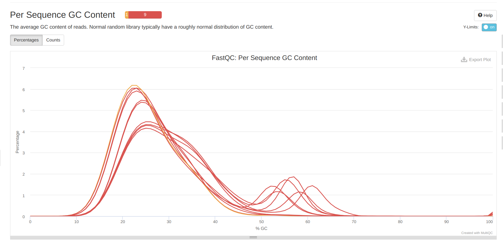

INTRO
Ran FastQC and MultiQC quality checks on the _P.tuahiniensis raw whole genome bisulfite sequencing (WGBS) data received 20250203, as part of urol-e5/deep-dive-expression.
The contents below are from markdown knitted from 00.00-F-Ptuh-WGBS-reads-FastQC-MultiQC (commit b471c05).
1 Background
This Rmd file will download raw WGBS-seq FastQs for P.tuahiniensis and evaluate them using FastQC and MultiQC (Ewels et al. 2016).
2 Create a Bash variables file
This allows usage of Bash variables across R Markdown chunks.
{
echo "#### Assign Variables ####"
echo ""
echo "# Data directories"
echo 'export deep_dive_expression_dir=/home/shared/8TB_HDD_01/sam/gitrepos/urol-e5/deep-dive-expression'
echo 'export output_dir_top=${deep_dive_expression_dir}/F-Ptuh/output/00.00-F-Ptuh-WGBS-reads-FastQC-MultiQC'
echo 'export raw_fastqc_dir=${output_dir_top}/raw-fastqc'
echo 'export raw_reads_dir=${deep_dive_expression_dir}/F-Ptuh/data/raw-fastqs'
echo 'export raw_reads_url="https://owl.fish.washington.edu/nightingales/E5-coral-deep-dive-expression/genohub2216545/"'
echo ""
echo "# Paths to programs"
echo 'export fastqc=/home/shared/FastQC-0.12.1/fastqc'
echo 'export multiqc=/home/sam/programs/mambaforge/bin/multiqc'
echo ""
echo "# Set FastQ filename patterns"
echo "export fastq_pattern='*.fastq.gz'"
echo "export R1_fastq_pattern='*_R1_*.fastq.gz'"
echo "export R2_fastq_pattern='*_R2_*.fastq.gz'"
echo ""
echo "# Set number of CPUs to use"
echo 'export threads=40'
echo ""
echo "## Inititalize arrays"
echo 'export fastq_array_R1=()'
echo 'export fastq_array_R2=()'
echo 'export raw_fastqs_array=()'
echo 'export R1_names_array=()'
echo 'export R2_names_array=()'
echo ""
echo "# Programs associative array"
echo "declare -A programs_array"
echo "programs_array=("
echo '[fastqc]="${fastqc}" \'
echo '[multiqc]="${multiqc}" \'
echo ")"
echo ""
echo "# Print formatting"
echo 'export line="--------------------------------------------------------"'
echo ""
} > .bashvars
cat .bashvars#### Assign Variables ####
# Data directories
export deep_dive_expression_dir=/home/shared/8TB_HDD_01/sam/gitrepos/urol-e5/deep-dive-expression
export output_dir_top=${deep_dive_expression_dir}/F-Ptuh/output/00.00-F-Ptuh-WGBS-reads-FastQC-MultiQC
export raw_fastqc_dir=${output_dir_top}/raw-fastqc
export raw_reads_dir=${deep_dive_expression_dir}/F-Ptuh/data/raw-fastqs
export raw_reads_url="https://owl.fish.washington.edu/nightingales/E5-coral-deep-dive-expression/genohub2216545/"
# Paths to programs
export fastqc=/home/shared/FastQC-0.12.1/fastqc
export multiqc=/home/sam/programs/mambaforge/bin/multiqc
# Set FastQ filename patterns
export fastq_pattern='*.fastq.gz'
export R1_fastq_pattern='*_R1_*.fastq.gz'
export R2_fastq_pattern='*_R2_*.fastq.gz'
# Set number of CPUs to use
export threads=40
## Inititalize arrays
export fastq_array_R1=()
export fastq_array_R2=()
export raw_fastqs_array=()
export R1_names_array=()
export R2_names_array=()
# Programs associative array
declare -A programs_array
programs_array=(
[fastqc]="${fastqc}" \
[multiqc]="${multiqc}" \
)
# Print formatting
export line="--------------------------------------------------------"3 Download P.tuahiniensis RNA-seq FastQs
Reads are downloaded from https://owl.fish.washington.edu/nightingales/E5-coral-deep-dive-expression/genohub2216545/
Since sequencing included multiple species, the code will also parse only those that are P.tuahiniensis.
The --cut-dirs 3 command cuts the preceding directory structure (i.e. nightingales/E5-coral-deep-dive-expression/genohub2216545/) so that we just end up with the reads.
3.1 Inspect metadata file
# Load bash variables into memory
source .bashvars
head ${deep_dive_expression_dir}/M-multi-species/data/e5_deep_dive_WGBS_metadata.csv |
column -t -s","Number Species Timepoint Collection Date Site colony_id Extraction Date Extraction notebook post DNA (ng/uL) Volume eluted Total DNA (ng) Primer Date Prepped Library concentration (ng/uL) bp peak Library volume (uL) Prep notebook post Notes
403 Pocillopora tuahiniensis TP2 20200305 Site1 POC-48 20211129 https://github.com/Kterpis/Putnam_Lab_Notebook/blob/master/_posts/2021-11-29-20211129-RNA-DNA-extractions-from-E5-project.md 29.1 90 2619 25 20240613 8.67 253 14 https://github.com/JillAshey/JillAshey_Putnam_Lab_Notebook/blob/master/_posts/2024-06-13-Zymo-Pico-Methyl-Seq-Library-Prep.md Labeled as POC-55 in KXT extraction post
413 Acropora pulchra TP2 20200305 Site1 ACR-178 20210902 https://github.com/Kterpis/Putnam_Lab_Notebook/blob/master/_posts/2021-09-02-20210902-RNA-DNA-extractions-from-E5-project.md 19.9 90 1791 26 20240613 9.64 269 14 https://github.com/JillAshey/JillAshey_Putnam_Lab_Notebook/blob/master/_posts/2024-06-13-Zymo-Pico-Methyl-Seq-Library-Prep.md
417 Pocillopora tuahiniensis TP2 20200305 Site1 POC-57 20211020 https://kterpis.github.io/Putnam_Lab_Notebook/20211020-RNA-DNA-extractions-from-E5-project/ 51.4 90 4626 27 20240613 9.3 256 14 https://github.com/JillAshey/JillAshey_Putnam_Lab_Notebook/blob/master/_posts/2024-06-13-Zymo-Pico-Methyl-Seq-Library-Prep.md Labeled as POC-238 in KXT extraction post
423 Acropora pulchra TP2 20200305 Site1 ACR-150 20210903 https://github.com/Kterpis/Putnam_Lab_Notebook/blob/master/_posts/2021-09-03-20210903-RNA-DNA-extractions-from-E5-project.md 17.7 90 1593 29 20240613 8.61 267 14 https://github.com/JillAshey/JillAshey_Putnam_Lab_Notebook/blob/master/_posts/2024-06-13-Zymo-Pico-Methyl-Seq-Library-Prep.md Labeled as POR-75 in KXT extraction post
427 Acropora pulchra TP2 20200305 Site1 ACR-145 20211012 https://kterpis.github.io/Putnam_Lab_Notebook/20211012-RNA-DNA-extractions-from-E5-project/ 19.6 90 1764 30 20240613 8.82 271 14 https://github.com/JillAshey/JillAshey_Putnam_Lab_Notebook/blob/master/_posts/2024-06-13-Zymo-Pico-Methyl-Seq-Library-Prep.md
439 Acropora pulchra TP2 20200305 Site1 ACR-173 20211102 https://kterpis.github.io/Putnam_Lab_Notebook/20211102-RNA-DNA-extractions-from-E5-project/ 19.9 90 1791 31 20240613 11.9 264 14 https://github.com/JillAshey/JillAshey_Putnam_Lab_Notebook/blob/master/_posts/2024-06-13-Zymo-Pico-Methyl-Seq-Library-Prep.md
467 Acropora pulchra TP2 20200305 Site1 ACR-140 20210921 https://github.com/Kterpis/Putnam_Lab_Notebook/blob/master/_posts/2021-09-21-20210921-RNA-DNA-extractions-from-E5-project.md 21.9 90 1971 32 20240613 16 270 14 https://github.com/JillAshey/JillAshey_Putnam_Lab_Notebook/blob/master/_posts/2024-06-13-Zymo-Pico-Methyl-Seq-Library-Prep.md DNA 1 and 2 Qubit readings are 27.6 and 27.4 but average is reported as 4.79 on github and on master sample sheet; JA re-qubited on 20240229 and got 21.9 ul/ng
471 Porites evermanni TP2 20200305 Site1 POR-76 20211015 https://kterpis.github.io/Putnam_Lab_Notebook/20211015-RNA-DNA-extractions-from-E5-project/ 2.7 90 243 33 20240613 5.25 245 14 https://github.com/JillAshey/JillAshey_Putnam_Lab_Notebook/blob/master/_posts/2024-06-13-Zymo-Pico-Methyl-Seq-Library-Prep.md
491 Porites evermanni TP2 20200305 Site1 POR-73 20211101 https://kterpis.github.io/Putnam_Lab_Notebook/20211101-RNA-DNA-extractions-from-E5-project/ 2.11 90 189.9 36 20240613 4.65 315 14 https://github.com/JillAshey/JillAshey_Putnam_Lab_Notebook/blob/master/_posts/2024-06-13-Zymo-Pico-Methyl-Seq-Library-Prep.md 3.2 Download raw reads
# Load bash variables into memory
source .bashvars
# Make output directory if it doesn't exist
mkdir --parents ${raw_reads_dir}
# Create list of only P.tuahiniensis sample names
sample_list=$(awk -F "," '$6 ~ /^POC/ {print $1}' ${deep_dive_expression_dir}/M-multi-species/data/e5_deep_dive_WGBS_metadata.csv)
echo ""
echo "${line}"
echo ""
echo "Sample list:"
echo ""
echo "${sample_list}"
echo ""
echo "${line}"
echo ""
# Use printf to format each item for use in wget
formatted_list=$(printf "*%s_*," ${sample_list})
# Remove the trailing comma
formatted_list=${formatted_list%,}
# Output the final wget command
echo ""
echo "${line}"
echo ""
echo "Formatted wget accept list:"
echo ""
echo "wget --accept=\"$formatted_list\""
echo ""
echo "${line}"
echo ""
# Run wget to retrieve FastQs and MD5 files
# Note: the --no-clobber command will skip re-downloading any files that are already present in the output directory
wget \
--directory-prefix ${raw_reads_dir} \
--recursive \
--no-check-certificate \
--continue \
--cut-dirs 3 \
--no-host-directories \
--no-parent \
--quiet \
--no-clobber \
--accept=${formatted_list} ${raw_reads_url}
ls -lh "${raw_reads_dir}"3.3 Verify raw read checksums
# Load bash variables into memory
source .bashvars
cd "${raw_reads_dir}"
# Checksums file contains other files, so this just looks for the RNAseq files.
for file in *.md5
do
md5sum --check "${file}"
done385_S13_R1_001.fastq.gz: OK
385_S13_R2_001.fastq.gz: OK
393_S14_R1_001.fastq.gz: OK
393_S14_R2_001.fastq.gz: OK
401_S15_R1_001.fastq.gz: OK
401_S15_R2_001.fastq.gz: OK
403_S11_R1_001.fastq.gz: OK
403_S11_R2_001.fastq.gz: OK
417_S12_R1_001.fastq.gz: OK
417_S12_R2_001.fastq.gz: OK4 FastQC/MultiQC on raw reads
# Load bash variables into memory
source .bashvars
# Make output directory if it doesn't exist
mkdir --parents "${raw_fastqc_dir}"
############ RUN FASTQC ############
# Create array of trimmed FastQs
raw_fastqs_array=(${raw_reads_dir}/${fastq_pattern})
# Pass array contents to new variable as space-delimited list
raw_fastqc_list=$(echo "${raw_fastqs_array[*]}")
echo "Beginning FastQC on raw reads..."
echo ""
# Run FastQC
### NOTE: Do NOT quote raw_fastqc_list
${programs_array[fastqc]} \
--threads ${threads} \
--outdir ${raw_fastqc_dir} \
--quiet \
${raw_fastqc_list}
echo "FastQC on raw reads complete!"
echo ""
############ END FASTQC ############
############ RUN MULTIQC ############
echo "Beginning MultiQC on raw FastQC..."
echo ""
${programs_array[multiqc]} ${raw_fastqc_dir} -o ${raw_fastqc_dir}
echo ""
echo "MultiQC on raw FastQs complete."
echo ""
############ END MULTIQC ############
echo "Removing FastQC zip files."
echo ""
rm ${raw_fastqc_dir}/*.zip
echo "FastQC zip files removed."
echo ""Beginning FastQC on raw reads...
application/gzip
application/gzip
application/gzip
application/gzip
application/gzip
application/gzip
application/gzip
application/gzip
application/gzip
application/gzip
FastQC on raw reads complete!
Beginning MultiQC on raw FastQC...
/// MultiQC 🔍 | v1.14
| multiqc | MultiQC Version v1.27 now available!
| multiqc | Search path : /home/shared/8TB_HDD_01/sam/gitrepos/urol-e5/deep-dive-expression/F-Ptuh/output/00.00-F-Ptuh-WGBS-reads-FastQC-MultiQC/raw-fastqc
| searching | ━━━━━━━━━━━━━━━━━━━━━━━━━━━━━━━━━━━━━━━━ 100% 20/20
| fastqc | Found 10 reports
| multiqc | Compressing plot data
| multiqc | Report : ../output/00.00-F-Ptuh-WGBS-reads-FastQC-MultiQC/raw-fastqc/multiqc_report.html
| multiqc | Data : ../output/00.00-F-Ptuh-WGBS-reads-FastQC-MultiQC/raw-fastqc/multiqc_data
| multiqc | MultiQC complete
MultiQC on raw FastQs complete.
Removing FastQC zip files.
FastQC zip files removed.# Load bash variables into memory
source .bashvars
# View directory contents
ls -lh ${raw_fastqc_dir}total 7.1M
-rw-r--r-- 1 sam sam 601K Feb 6 14:37 385_S13_R1_001_fastqc.html
-rw-r--r-- 1 sam sam 601K Feb 6 14:37 385_S13_R2_001_fastqc.html
-rw-r--r-- 1 sam sam 613K Feb 6 14:38 393_S14_R1_001_fastqc.html
-rw-r--r-- 1 sam sam 600K Feb 6 14:39 393_S14_R2_001_fastqc.html
-rw-r--r-- 1 sam sam 600K Feb 6 14:36 401_S15_R1_001_fastqc.html
-rw-r--r-- 1 sam sam 594K Feb 6 14:36 401_S15_R2_001_fastqc.html
-rw-r--r-- 1 sam sam 583K Feb 6 14:39 403_S11_R1_001_fastqc.html
-rw-r--r-- 1 sam sam 591K Feb 6 14:40 403_S11_R2_001_fastqc.html
-rw-r--r-- 1 sam sam 578K Feb 6 14:45 417_S12_R1_001_fastqc.html
-rw-r--r-- 1 sam sam 582K Feb 6 14:46 417_S12_R2_001_fastqc.html
drwxr-xr-x 2 sam sam 4.0K Feb 6 14:46 multiqc_data
-rw-r--r-- 1 sam sam 1.3M Feb 6 14:46 multiqc_report.htmlRESULTS
MultiQC HTML file is here:
multiqc_report.html(commit:b471c05)
Overall, looks like the first 10bp need to be trimmed, as well as adapters and polyG sequence. Curiously, there is a second peak in the GC conent analysis. This second peak is not present in the A.pulchra data (Notebook), but is also present in the P.evermanni data (Notebook). Multiple GC content peaks suggest that there might be carryover from endosymbionts?
